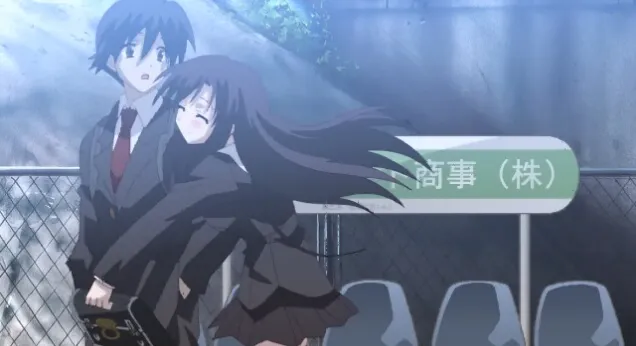

日在校園 HQ：簡單過個快樂聖誕
Galgamer 聖誕節特別篇，聖誕節快樂！
At A Glance
活潑可愛的少女西園寺世界，決定幫助同班同學伊藤誠追求隔壁班的女神桂言葉，沒想到自己卻深陷其中。
| 資訊一覽 | |
|---|---|
| 劇本 | STACK |
| 開發商 | Overflow |
| 攻略人數 | 不止兩個 |
| 遊戲時長 | 。。。 |
| 類型 | 學園 NTR 後宮 運動 歡樂 格鬥 |
| 遊戲畫面 | 全動畫 CG |
| 分級 | R-18 |
| 難度 | 非常高 |
故事
你知道嗎？把喜歡的人的照片設爲手機屏保，
然後三個星期沒被別人發現的話，
願望就能夠實現喔！
男主角 伊藤誠，從第二學期開始，注意到了
總是搭乘同一班電車的隔壁班女生，
桂言葉。
心裏雖然在意，但是並沒有喜歡到想讓她當女朋友。
只是覺得和她搭乘同一班電車，
上學之路就變得稍微快樂起來。
誠哥並不相信傳聞中的魔法真的靈驗，但是他還是偷偷拍下了桂言葉的照片。
然而誠哥剛來到學校，手機壁紙上的言葉就
火速暴露給了新同桌，西園寺世界。
「抱歉！不小心看到了，魔法要不靈了！」
「要不我就幫你一把，直到她成爲你的女朋友爲止！」
世界提議道。
新同桌如此熱情，讓誠哥覺得很疑惑。
但是他還是接受了提議，於是屬於三人的戀愛冒險開始了。
“純潔的戀愛冒險”
JavaScript 錯誤，無法顯示路線圖
人物介紹
美好的外表過於引人注目，
導致她從小性格就內向，
甚至還被同班同學欺凌
（校園霸凌！）
屬於深閨大小姐的一種。

性格開朗，
要是嘴巴不那麼羅嗦就可愛了。
據說前來告白的男生全部都被狠狠拒絕了。

是個無趣的高中生，
膽小怕事，要是世界不去推動牠，
牠永遠不會和言葉說上話。
軟弱的性格就會猶豫不定，
猶豫不定就會...
每年的那個時候都要掛上誠哥的遺像。
其他角色
CG

爆血的 CG 請自己打出來，我就不放了，，，
OP 動畫
官方沒給我自己錄的
本作 OP 和 ED 已收錄到 Galgame 金曲，
OP 🔗️Still I Love You~みつめるよりは幸せ~（新窗口打開）
ED 🔗️あなたが…いない（新窗口打開）
一句話點評
相信這部作品早已名聲在外，不是 Galgame
玩家的普通諤次元人也肯定知道「日在校園」
因爲該遊戲的改編的動畫由於過於殘酷的結局
而一時名聲大噪，
所以一般第一反應就是被斷頭的渣男誠哥。
不過遊戲中並不存在頭被砍下來的結局，
（被砍的是其他部位我會亂講？），
那純粹是動畫編劇的惡趣味。
不過本作作爲一個十幾年前就發佈的全動畫化的
Galgame，不得不說這是一個偉大的成就。
（請允許我使用用偉大二字）
話說回來，該遊戲本身就非常複雜，
路線和結局也非常多，
不如說大部分人都打不出爆血的結局，
一般都是和某個人最終走到一起的甜蜜（甜蜜？）結局。
所以那些一週目就把遊戲玩死的人，
請受我一拜，你們才是真正的 NTR 人渣。
遊戲安排了那麼多結局，導致結局本身變得不那麼重要，
而那些兩人由於猜疑、嫉妒而糾纏不清；
男主由於軟弱而左右搖擺，
導致其中一人趁虛而入給 NTR 了的
劇情才是真正有意思的部分。
而且遊戲中經常出現那被落下的一人孤苦伶仃
的畫面，再加上此時響起的遊戲插曲
（請重溫一下上面的金曲「あなたが…いない」），
直接將牛頭人氣氛推到最巔峰，
讓本作成爲了聖誕節當天體會戀愛氣氛的絕佳不二之選。
還在猶豫是否下載？
試玩錄像在此，建議開 1.25 倍速觀看。
資源與下載
我找到了英文版和中文漢化版的資源，日文版沒有找到。
中文版：
英文版：
1 | |
資源來自 anime-sharing 論壇
Win10 兼容性解決方案
該遊戲較老，容易崩潰，請按照以下步驟進行優化：
安裝官方的 🔗️DX9 補丁，把解壓出來的 DLL 放到遊戲目錄。
遊玩的時候使用任務管理器將遊戲進程設爲單核運行（如圖點進去，然後只勾上 CPU0）

關於遊戲難度
基於以下原因，我將本作難度確定爲「非常高」：
- 極其複雜的路線圖
- 出現選項時無法存檔
- 由於是全動畫 CG，無法像普通 Galgame 一樣進行隨意 Ctrl
- 選項有倒計時，你可能會錯過選項
- 選項和路線圖上的圓點不是一一對應
然而，好消息是：
- 你可以通過路線圖上的圓點直接跳轉
然而，壞消息是：
- 路線圖有時候會卡死打不開
所以，我的遊玩建議是：
- 一週目，反正你也沒辦法控制劇情走向，直接亂選比較好，說不定還能觸發出乎意料的結局
- 使用路線圖跳轉來嘗試不同的選項
- 看攻略
- 多存檔以免遊戲卡死
对于原创内容，文章作者保留所有权利。转载需要许可，如有需要请前往 🔗️Galgame 频道 留言。
另外，复制链接自由，请随意分享。